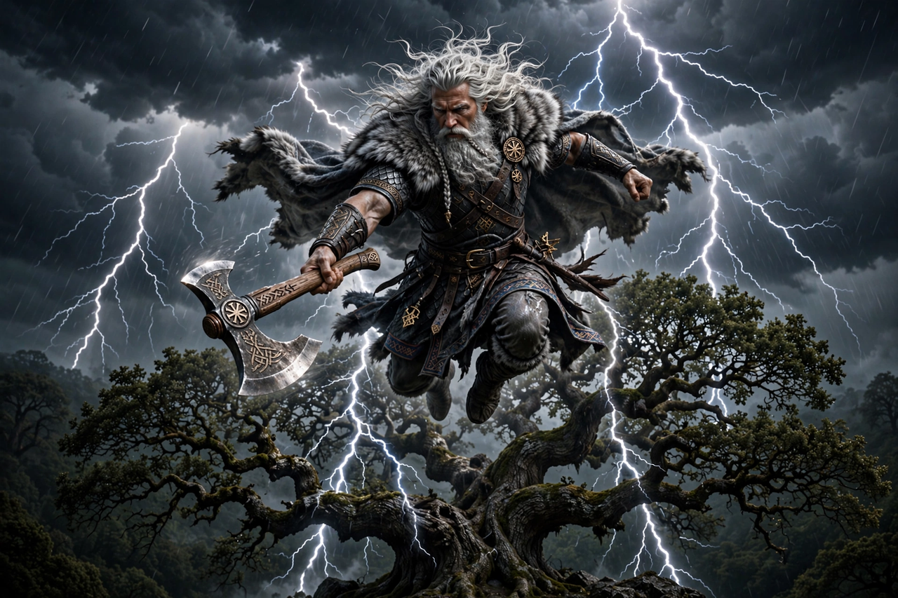

From Wikipedia, the free encyclopedia
| Perun | |
|---|---|
| Affiliation | Slavic mythology; god of thunder, lightning, war and law |
| Depicted as | A mature warrior with silver hair and golden moustache, riding a chariot or standing on a mountain |
| Symbols | Oak, axe, hammer, lightning; the thunderstone |
| Chief cult | Kiev and Novgorod (to 988 CE) |

Perun is the supreme god of the pre-Christian Slavs: lord of thunder and lightning, war, law and the high places, whose name is kin to the word for the thunderbolt itself. The Primary Chronicle describes his idol at Kiev — wooden body, silver head, golden moustache — before which Prince Vladimir's druzhina swore their treaties, and his sacred tree is the oak, struck by lightning and therefore his. When Vladimir Christianised Rus' in 988, Perun's idol was beaten, dragged by horses and thrown into the Dnieper, wept over by the people as it floated away: the most vivid scene of a god's deposition in Slavic history.
Perun belongs to the great Indo-European family of thunderers — Thor, Zeus, Indra, Perkūnas of the Balts — and shares their grammar: the storm-battle against a serpent enemy (in his case Veles, god of the waters and the underworld, whose cattle Perun recovers in the reconstructed myth), the oak, the mountain-top, the axe and hammer amulets his worshippers wore. As god of law his name guaranteed oaths: the Rus' treaties with Byzantium were sworn "by Perun", and perjury invited his lightning. In folklore he merged into Saint Elijah (Ilya), who still rides his fiery chariot across the Slavic sky, and thunder remains, in the old phrase, Ilya's driving.
Slavic mythology · Mythology · Zeus · Indra · Thor